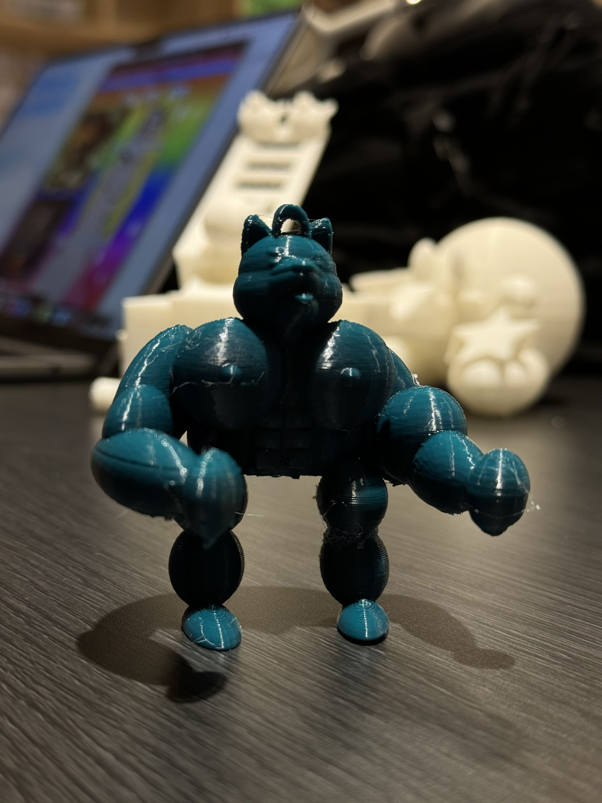
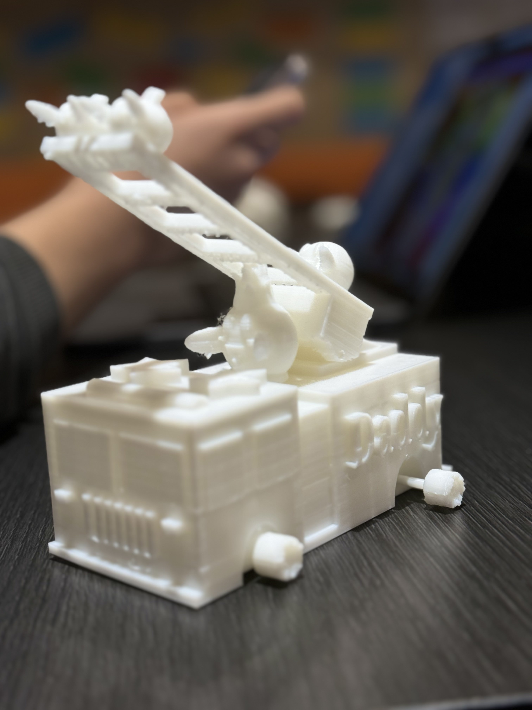
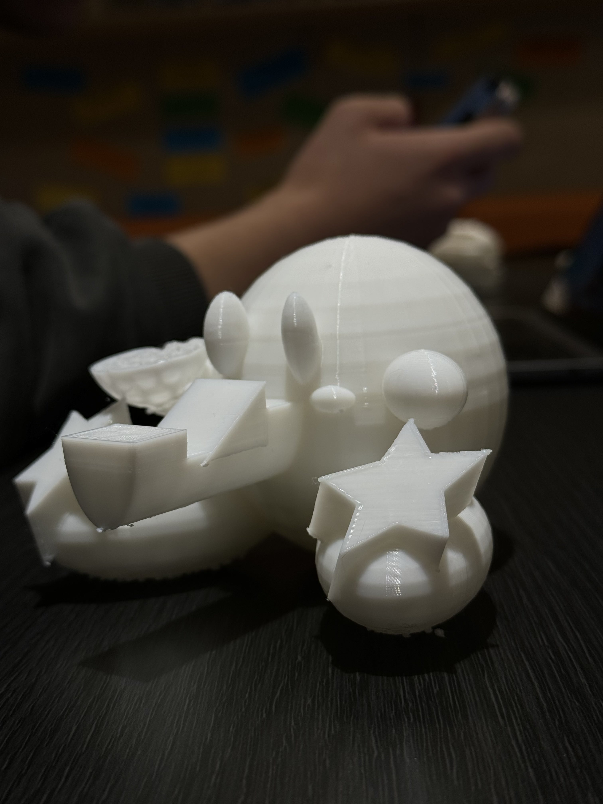
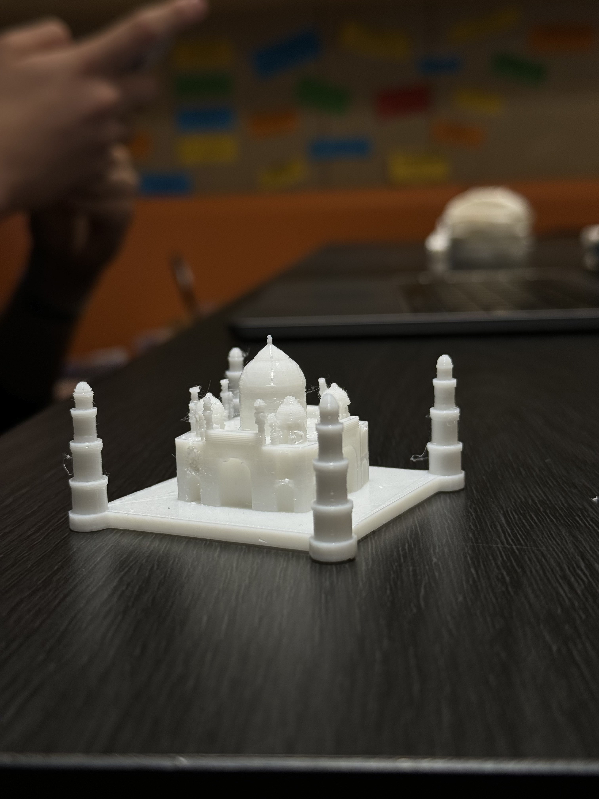

3D Models
My 3D Models
I made these models with Tinkercad and printed out these models using the 3D printer. I learned how to use
normal shapes to make complex architectures and creatures using Tinkercad. I made Buff Shiba, Kirby
truck, Kirby phone stand, and the Taj Mahal. Please enjoy!

Buff shiba

Kirby truck

Kirby phone stand

Taj Mahal